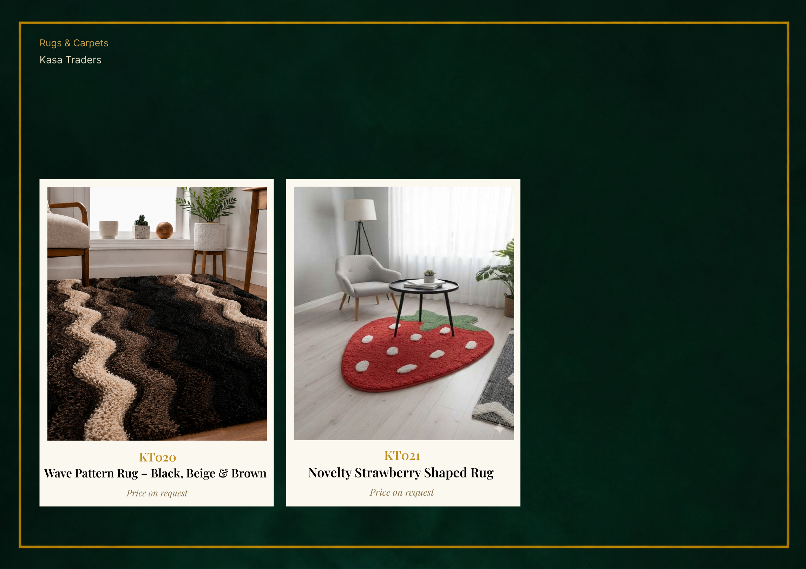

CATALOGUE CASE STUDY · KASA TRADERS
A catalogue with a storefront rhythm.
A 47-page interactive catalogue, supported by a 2-page pamphlet and a 2-page print piece.
Problem and process
A home textiles business needed a digital storefront that could carry product tactility across distance. I created a forest-green and muted-gold identity system, then structured the catalogue as an editorial product book.
Selected pages


Outcome
A digital storefront for home textiles with a consistent identity across catalogue and print collateral.